简介
这是台大的李琳山老师的课程，课程前八节是基础，后八节课是拓展。
PartI: Fundamental Topics
1.0 Introduction to Digital Speech Processing
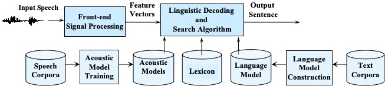 Acoustic Models ：声学模型，语音波形->语音单位（比如音素）
Lexicon：词典，语音单位->语言单位（比如字，或者单词或者词语）
Language Model：语言模型，比如预测在前一个语言单位下后一个语言单位的概率
2.0 Fundamentals of Speech Recognition
HMM
定义如下： 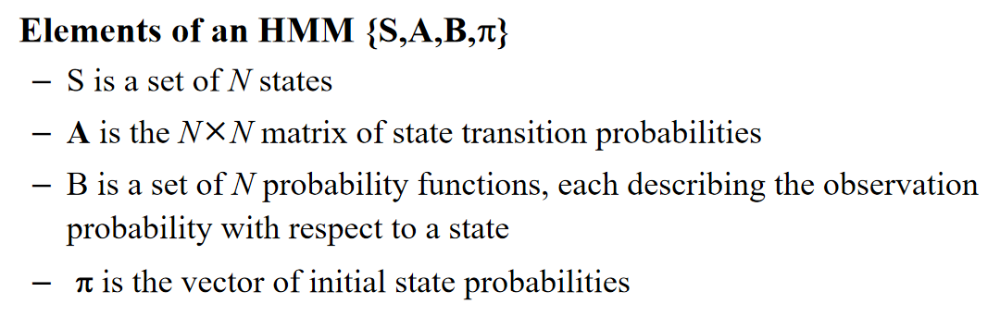 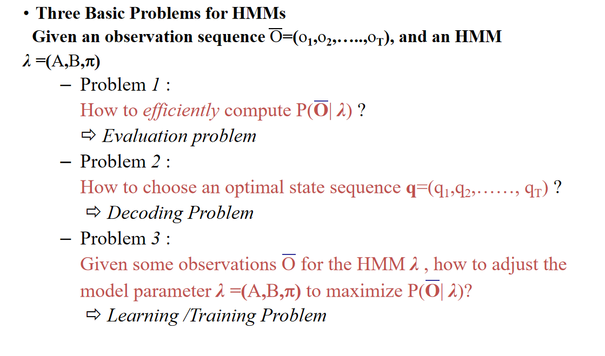 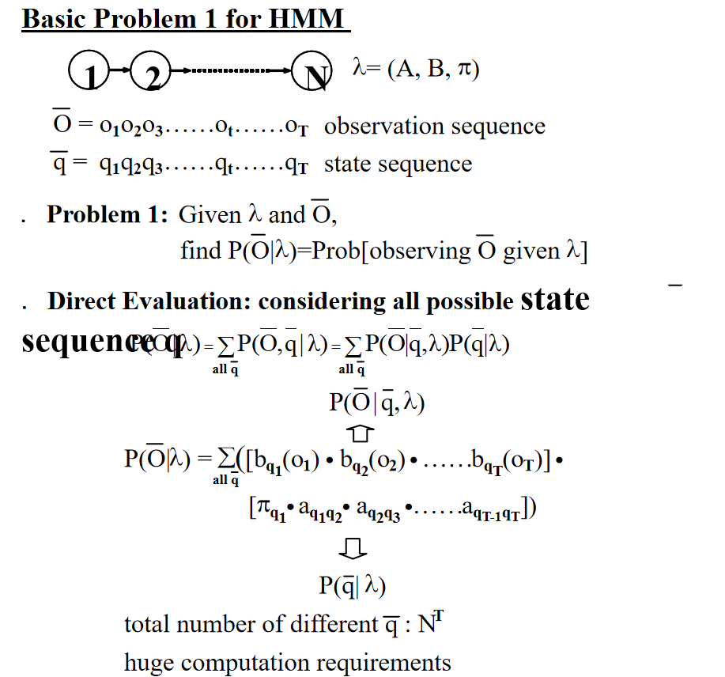 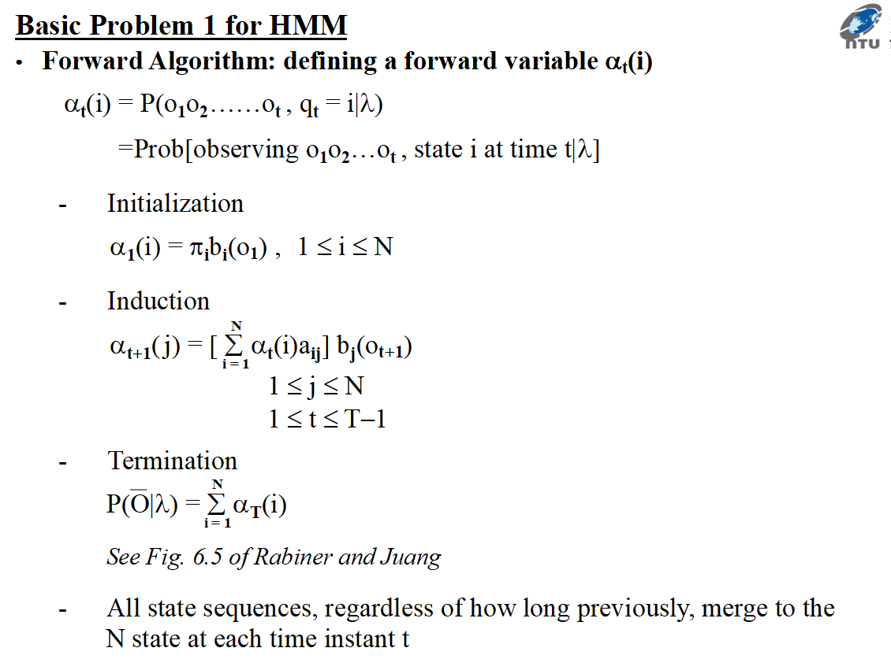 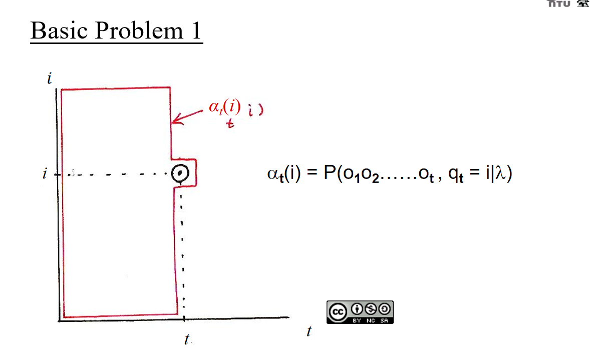 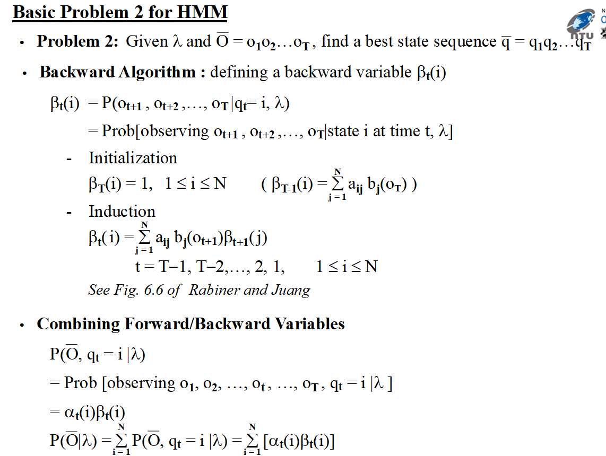 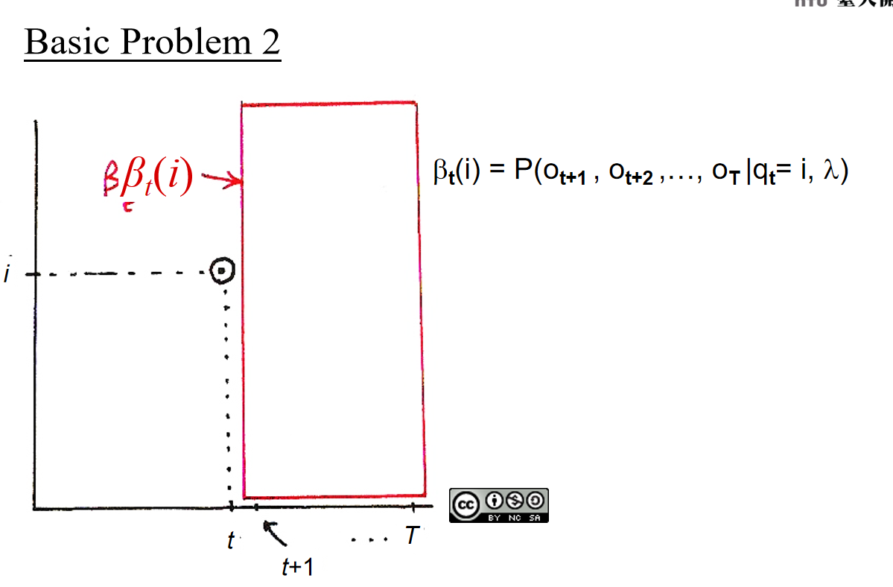 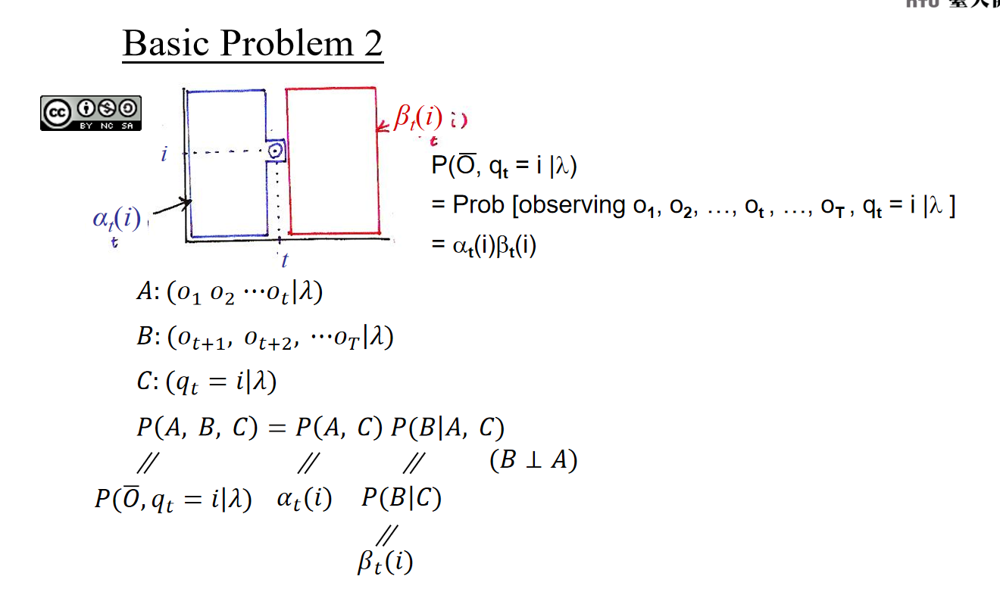 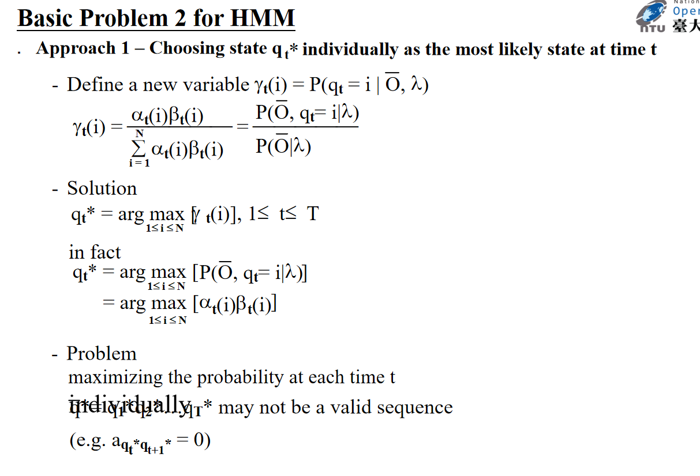 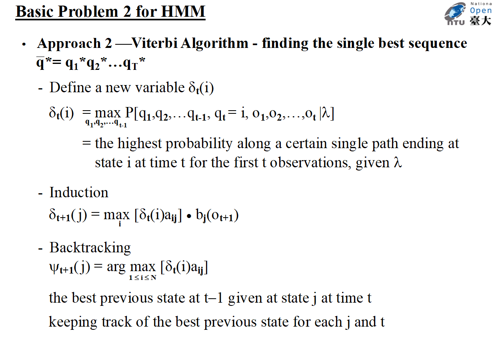 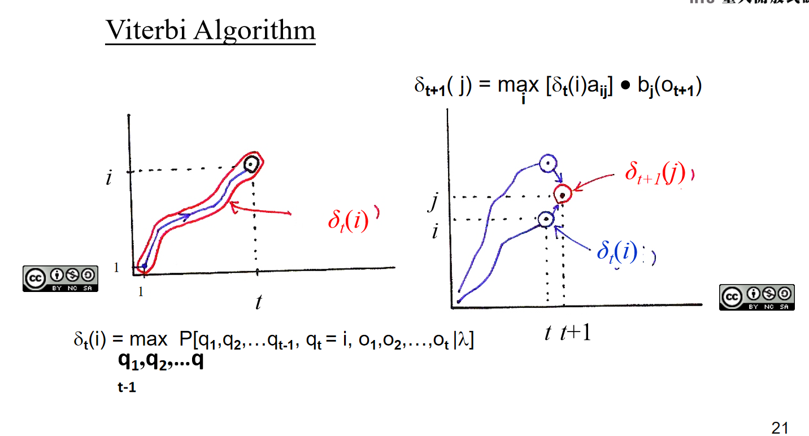 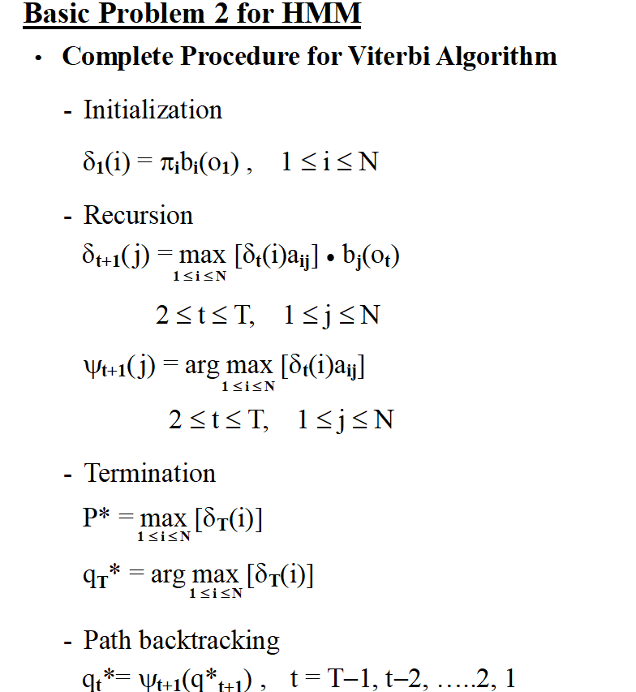 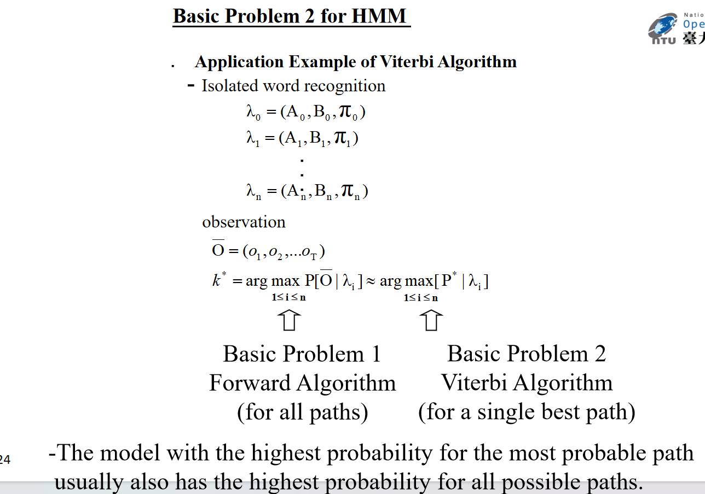
N-dim Guassion
Feature Extraction (Front-end Signal Processing)
Pre-emphasis
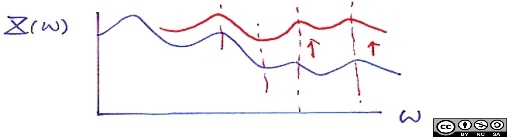
Endpoint Detection (Speech/Silence Discrimination)
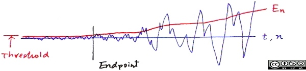
Windowing
Rectangular window
Hamming window
MFCC
N-gram
MAP(最大后验概率)
3.0 Map of Subject Areas
4.0 More about Hidden Markov Models
5.0 Acoustic Modeling
6.0 Language Modeling
7.0 Speech Signals and Front-end Processing
8.0 Search Algorithms for Speech Recognition
Part II: Advanced Topics
9.0 Speech Recognition Updates
10.0 Speech-based Information Retrieval
11.0 Spoken Document Understanding and Organization for User-content Interaction
12.0 Computer-assisted Language Learning(Call)
13.0 Speaker Variabilities: Adaption and Recognition
14.0 Latent Topic Analysis
15.0 Robustness for Acoustic Environment
16.0 Some Fundamental Problem-solving Approaches
17.0 Spoken Dialogues
18.0 Conclusion
语者识别与适应 SI 语者独立 SD 语者相关 SA 语者适应 MAP 最大后验概率 MLLR 最大概率线性压缩 PCA 主成分分析 EigenVoice (PAC) SAT CAT